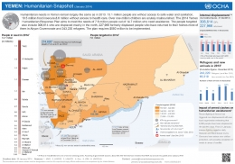

Yemen: Conflict destroying livelihoods in northern Yemen
The recent conflict in Amran Governorate, northern Yemen, has displaced thousands of families, disrupted livelihoods and destroyed houses and farmland.
“My family was first displaced to Khyar, Bani Suraim District, in late December [2013],” said 25-year old Naji Hudairi. “On 3 February, militants reached Khyar, so I was displaced again and went to Sana’a [Yemeni capital], where I sold my wife’s jewels, some pieces of furniture and my gun to pay for rent and food.”
Naji was a farmer from Dhu Eliyan village in the Huth District of Amran. This area saw intense fighting in the last week of January between fighters from the Al Houthi movement which controls large parts of northern Yemen, and Hashid tribesmen. Thousands more families were displaced.
“I had a piece of land growing khat (a mild narcotic widely grown in Yemen), corn and tomatoes,” Naji, a father of six said. “When the conflict started in December, my farm was destroyed by artillery shells. My house was used by the local tribal fighters against Al Houthi militants. As a result, it was blown up. I lost two relatives, and three others are wounded.”
Increased hardship
Like Naji, 37-year old Abdulrahman Al Saba’ie, from Hisn Al Nawash village in Al Qaflah District, lost his house to artillery fire. A 13 year army veteran, Abdulrahman used to receive a monthly pension equivalent to US$150. For reasons he does not know, that money no longer comes.
“My wife and four children are displaced to Al Jannat village, 7 km from Amran city, where I have rented one room with no bathroom,” Abdulrahman said. “Two of my sons and one daughter are studying in a nearby school. We have received mattresses, cooking utensils and one ration including wheat and wheat flour.”
Naji said he has received no humanitarian assistance. “My family members are distributed among relatives because I cannot afford to support all of them,” Naji said. “My eldest son, Mohamed, is studying in Sana’a, the other is with his uncle in Khyar, the two daughters are with their grandmother at my village, and the two children are with me.”
Scaling-up assistance
The violence in Amran has displaced more than 42,000 people since October 2013, according to information compiled by OCHA. Most of the displaced people now live with families and host communities within the Governorate. In mid-December, clashes between the Al Houthi movement and Al Hashid tribe escalated again, triggering the displacement of just under 20,000 people.
Humanitarian partners are concerned about protection of civilians, in particular women and children. An OCHA aid worker has been deployed to help coordinate the response as various UN agencies and NGO partners scale-up their activities.
Access to those in need however remains a challenge because of widespread insecurity. A truce was agreed on 4 February, but there are reports of continued clashes.
The conflict in Amran has increased humanitarian needs at a time when the humanitarian community in Yemen is advocating for increased funding. In 2014, humanitarian organisations require US$592 million to meet the varied needs of 7.6 million vulnerable people in Yemen.
“There are a huge number of hungry people who don’t have access to the most basic services, who don’t have access to rule of law and protection,” Trond Jensen, OCHA Head of Office in Yemen told a news conference in Geneva at the beginning of February.
Political transition
Yemen has just concluded a National Dialogue Conference in an attempt to chart a new political future. However, aid officials warn that a failure to address the humanitarian crisis in Yemen could undermine any political progress.
“We have this opportunity today – a political process that is moving on to stabilize Yemen - [but] we need to realize that unless we create jobs for the youth, unless we are able to provide food assistance for life-saving activities or health, we will not be able to stabilize the country,” the Humanitarian Coordinator for Yemen, Mr. Ismail Ould Cheick Ahmed told the Geneva news conference.
According to the 2014 Yemen Humanitarian Needs Overview, 10.5 million people in Yemen are food insecure, of which 4.5 million are severely food insecure. More than 1 million children under-5 years of age are suffering from acute malnutrition, including 270,000 who are severely acutely malnourished.
The weakness of rule of law institutions and inadequate protection systems make women, children, returnees, migrants, refugees and other groups highly vulnerable to rights violations, abuse and exploitation. About 13.1 million Yemenis have no access to clean water sources. Overall, 14.7 million – more than half the population – need some form of humanitarian assistance.
“This is the only [one of the] Arab spring countries which has been able to have all the political parties coming to the same table,” said Mr. Cheick Ahmed. “We have an opportunity today as the international community to stabilize Yemen. That is an opportunity that we should not miss.”

{kind=link}